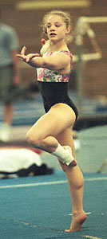

Vanessa Atler (USA)
1998 Goodwill Games V and FX Champion

Vanessa was born on February 17, 1982 in California. A victim of age limits imposed by the FIG, Atler was unable to compete in either the 1996 Olympics or the 1997 World Championships. At the 1999 French International, Atler injured her ankle on FX. The injury was misdiagnosed for many months, causing even more damage.
Just prior to the 1999 World Championships, Atler left her longtime coaches at Gliders Gymnastics. Bela Karolyi trained her for a short period of time; she then moved to World Olympic Gymnastics Academy in Plano, TX where she was coached by Valery Lyukin. Based on performances in early 2000 (1st at US Classic, 4th at US Championships) Atler had a good chance of making the Olympic team. Disappointing performances at the Olympic Trials, however, kept her off the team. Atler retired from gymnastics, took college classes and worked as a coach. In early 2005, she appeared on a reality show called "Starting Over."
Competition Results
1993
Level 9 Nationals (age 9-11): 23rd AA
1994
Jr. US Classic "B": 3rd AA
1995
International Junior Championships: 4th AA, 1st FX, 4th V, 4th B
Jr. American Classic: 4th AA
Jr. US Championships: 2nd AA
US Olympic Festival: 3rd AA, 1st B, 2nd FX
1996
Avignon International: 9th AA, 2nd UB, 5th FX
Jr. American Classic: 1st AA
Jr. US Championships: 1st AA
1997
American Cup: 2nd AA, 1st V, 1st B
Canberra Cup: 1st AA, 1st FX, 2nd V, 2nd UB
Intl. Team Championships: 2nd Team, 4th AA
US Championships: 1st AA
USA-AUS Dual Meet: 1st Team, 2nd AA
1998
Australia Cup: 1st AA, 1st V
American Cup: 4th AA, 1st V
Copa Gimnastica: 3rd AA, 1st V, 4th B
Goodwill Games: 1st V, 1st FX
Intl. Team Championships: 1st Team, 6th AA
Pacific Alliance Championships: 5th AA, 1st V, 1st FX
US Championships: 2nd AA
1999
American Classic: 1st AA, 1st V, 1st B, 1st FX
American Cup: 3rd AA
French International: 2nd AA, 1st V, 5th B, 5th FX
US Championships: 2nd AA, 1st V, 1st B
World Championships: 6th Team, 31st AA
2000
American Classic: 31st AA
Pacific Alliance Championships: 3rd V
US Classic: 1st AA
US Championships: 4th AA
US Olympic Trials: 6th AA
This page was created on January
16, 2005 and was last updated on August 06, 2005.
© Gymn Forum